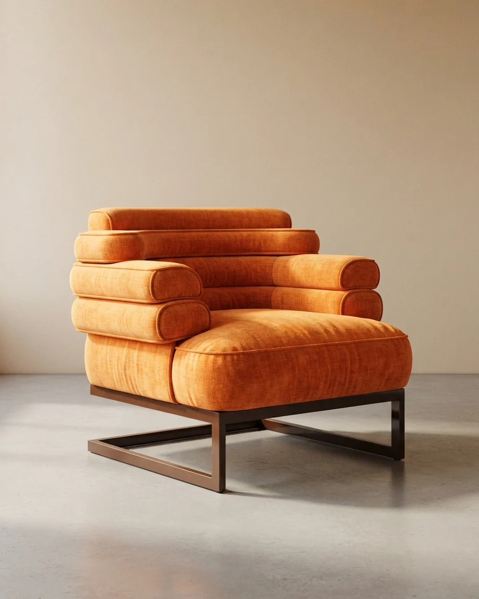
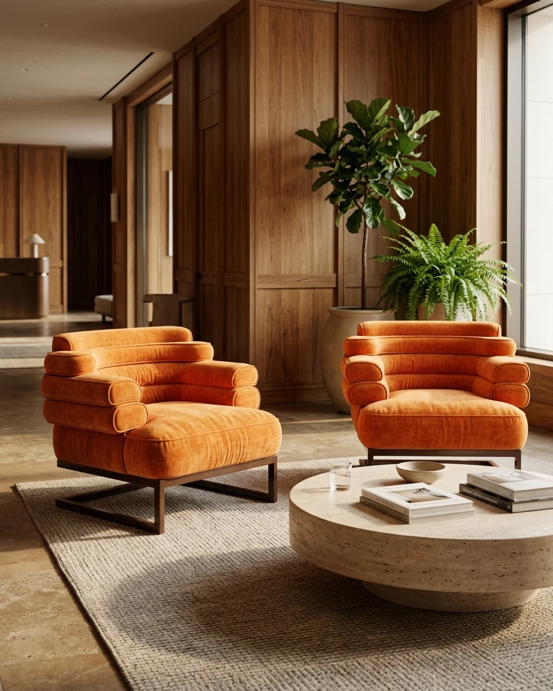

Серия Studio · Офис и переговорные
Atrium
Лаунж-кресло ручной работы
Низкое кресло в духе семидесятых: спинка и подлокотники собраны из мягких ступенчатых валиков. Корпус стоит на тонком стальном основании в глянцевом лаке.
Тканьот 26 000 ₽
Выбран цвет: Мандариновый шенилл
- Каркас
- Металл
- Обивка
- Мандариновый шенилл, Шенилл цвета мха, Песочный шенилл. Возможен свой материал
- Ткани
- Коллекции Noble, Fiori, Bohemia, Rio
- Гарантия
- 12 месяцев, ГОСТ 16371-2014
- Производство
- Фабрика полного цикла ГК «Фабрикант»
- Доставка
- По России и СНГ
Изготавливаем под ваш проект: точные размеры, обивку и стоимость фиксируем в персональном расчёте.

 Linea
Linea Meridian
Meridian Stroke
Stroke